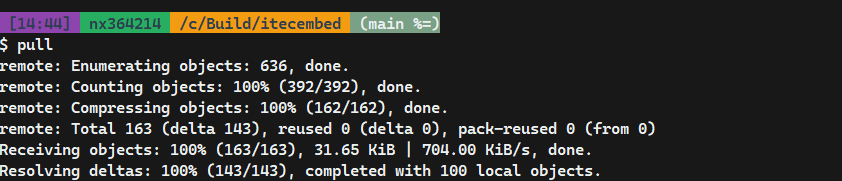

How to Customize Git Bash

- Change prompt appearance by editing
~/.bashrcor~/.bash_profile. - Add useful aliases, e.g.
alias gs='git status'. - Customize colors and fonts in Git Bash options (right-click title bar → Options).
- Install additional tools (e.g.
nano,vim,curl). - Set environment variables for your workflow.
Example: Adding an Alias
echo "alias gs='git status'" >> ~/.bashrc
source ~/.bashrc